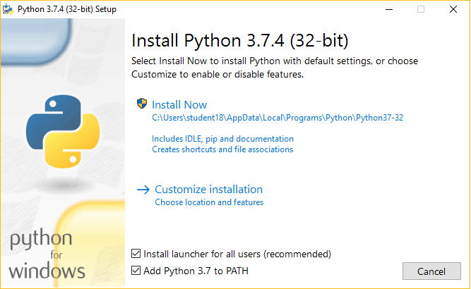
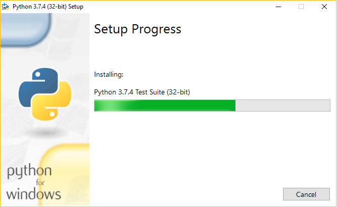
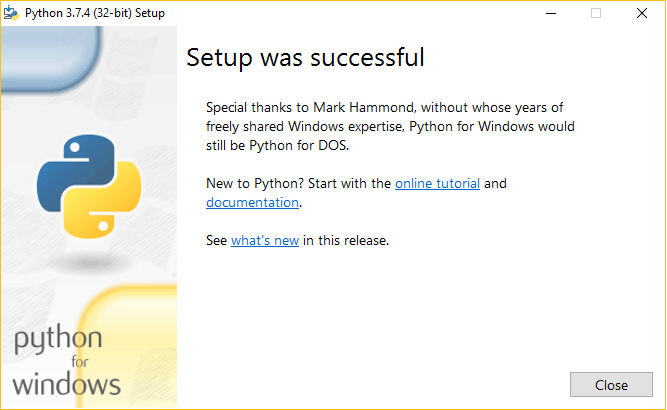
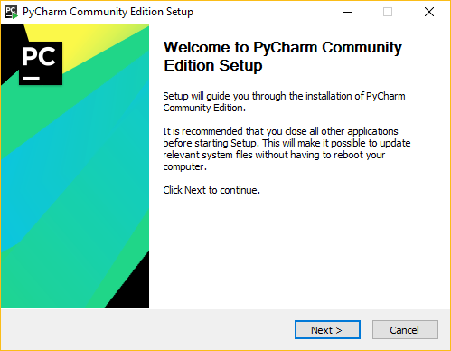
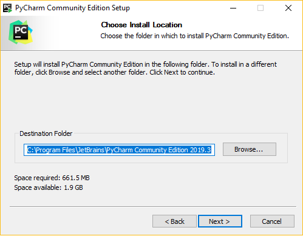
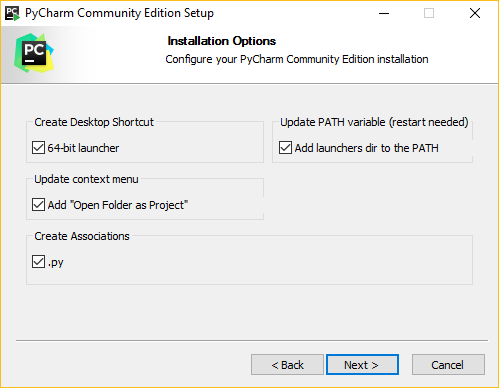
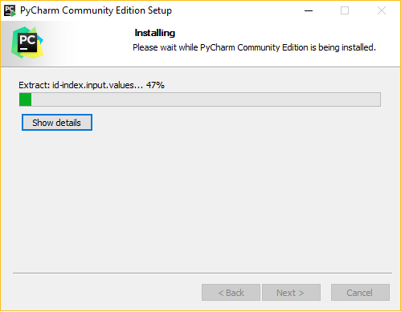
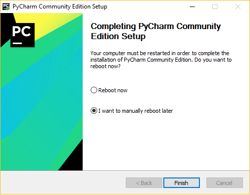

Pierwsze kroki z Python'em
Czym jest Python?
Python to język programowania, który w dzisiejszych czasach zyskuje bardzo dużą popularność.
Według wielu jest najprostszym językiem programowania, jest to uzasadnione m.in. tym, że ma prostą i łatwo czytelną składnię.
Pythona charakteryzuje dynamiczne typowanie zmiennych (jedna zmienna w jednym programie może przyjmować więcej niż jedną wartość),
co jest uznawane za plus i jednocześnie za minus tego języka.
Jak zacząć programować w Python'ie?
Najpierw musisz wejść
tutaj i pobrać plik .exe (executable installer) na Windows'a wybranej przez Ciebie wersji Python'a.
Następnie kliknij na plik, który przed chwilą pobrałeś i podążaj za poniższymi instrukcjami:
- Kliknij na opcję "Install Now" aby zainstalować Python'a i upewnij się, że kliknąłeś "Add Python 3.X to PATH". Dlaczego to jest takie ważne? Bo Windows nie będzie w stanie otworzyć plików .py.

- Poczekaj do zakończenia instalacji

- Po zakończeniu instalacji można zamknąć okno.

Teraz trzeba mieć w czym programować, aby nasz kod mógł zadziałać. Automatycznie pobierze Ci się z
tego miejsca zintegrowane środowisko programistyczne (IDE)
Pycharm, w którym nauczymy się jak pisać programy w Python'ie. Instalacja wygląda w następujący sposób:
- Po pobraniu pliku z Twoim środowiskiem, kliknij na niego. Wyskoczy Tobie okno instalacyjne. Po prostu kliknij "Next".

- Tutaj możesz zmienić położenie pliku, który ma być zainstalowany. Jeśli nie chcesz nic zmieniać po prostu kliknij "Next".

- Tutaj polecam zaznaczyć wszystko. Jeśli nie chcesz funkcji "Add "Open Folder as a Project"" nie musisz jej zaznaczać. I tutaj znowu musisz się upewnić, że jest zaznaczone "Add launchers dir to PATH".

- W następnym etapie bedziesz mógł/mogła wybrać sobie ikonkę do Pycharma. Ja wybrałem domyślną. Po wybraniu ikonki kliknij "Install"

- Na koniec wyświetli Ci się ekran z opcjami, aby uruchomić ponownie komputer. W takim razie uruchom ponownie komputer i przejdź do kolejnego etapu nauki tego języka programowania :D

W czym można tworzyć pliki .py?
Pycharm nie jest jedynym narzędziem do pisania kodu w Python'ie. Oto lista kilku innych programów do tworzenia programów o rozszerzeniu .py w systemie Windows:
- Notatnik (dołączony do systemu Windows)
- Notepad++
- IDLE (zainstalowany razem z samym Python'em)
- Sublime Text
- Geany